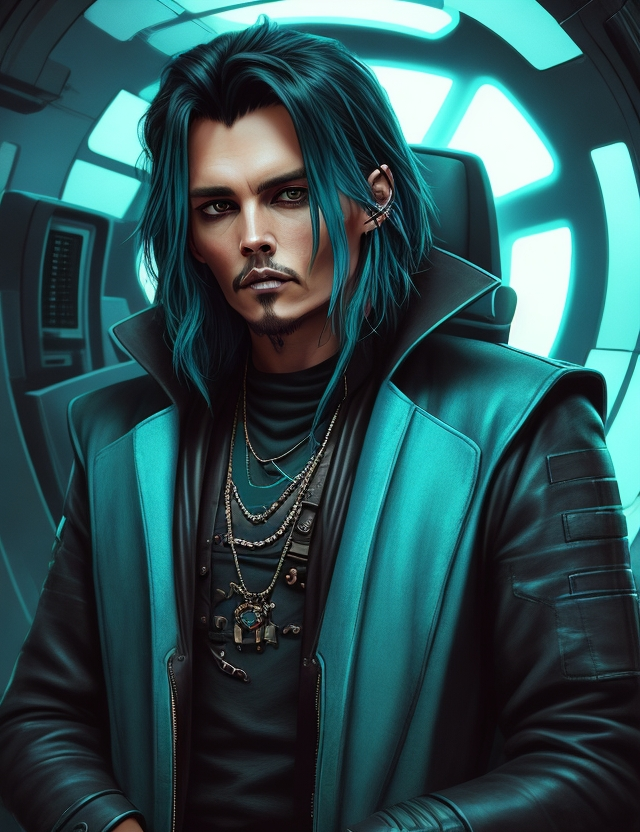
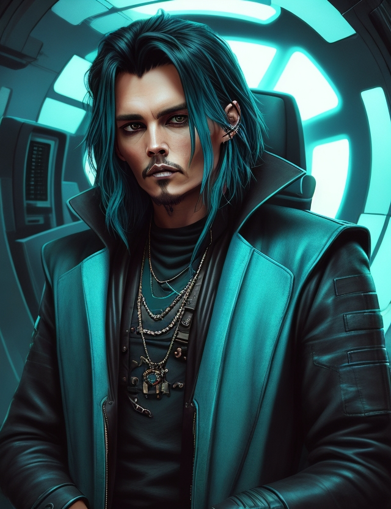

login/registre-se
login/registre-se
Grimley é um jovem rapaz de 25 anos que estava fazendo faculdade de direito, ele fez 5 anos da faculdade, porém se sentia infeliz durante todo o período do curso, ele então em um ataque de surto decidiu largar tudo e correr atras do seu sonho de viver da música, e foi então que no ultimo ano, na ultima prova prestes a se formar Grimley saiu correndo da sala de aula, abandonando tudo, porém Grimley se sentia mais feliz do que jamais foi em sua vida, ele agora estava livre.


Representação Celestial do Conceito de Existência, conhecido como Ifrit, manifesta-se através da utilização do Colar de Ifris.

Grimley enquanto estava em busca de poder, digo, cerveja, foi aprendendo a manipular seus poderes, e até que ele estava indo bem nos seus estudos, até que um dia em uma de suas aventuras Grimley conheceu o amor da sua vida, e se casou com ela, e foi graças a ela que ele conseguiu conquistar os seus três castelos, Grimley agora é um imperador (ou rei de três castelos como ele gosta de se auto nominar).
Grimley ficou conhecido no universo inteiro por conta dos seus feitos, e com eles Grimley ganhou uma cidade inteira somente para as suas versões espalhadas no universo (em breve eu conto um pouco sobre a Cidadela Grimley), la é um espaço de refúgio para todos os seres vivos do universo e é la também que você poderá encontrar todas as versões do Grimley
Nesta cidade a lei é clara todos aqueles que se chamam Grimley tem direito a uma cerveja, é nesta cidade que ocorrem as reuniões de todas as ligas do tempo, Grimley se tornou um marco para o multiverso, já tendo salvado universo da destruição completa cinco vezes.
Este é o nosso amigo Grimley, o Rei
 
